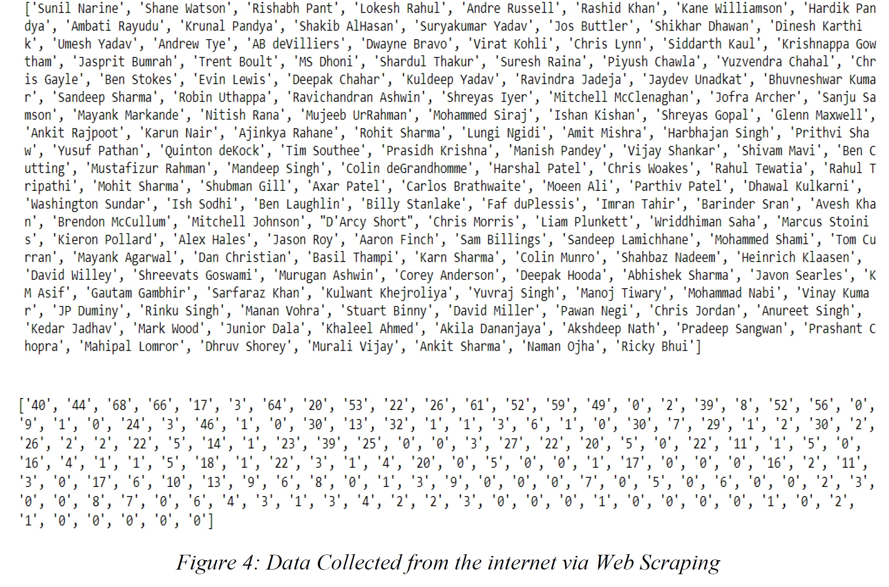
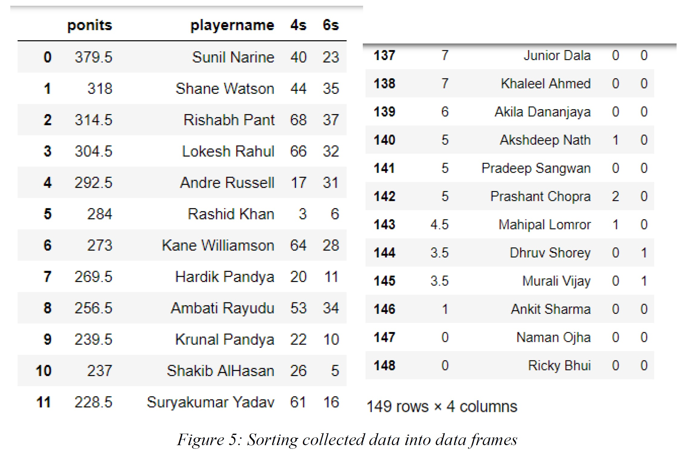
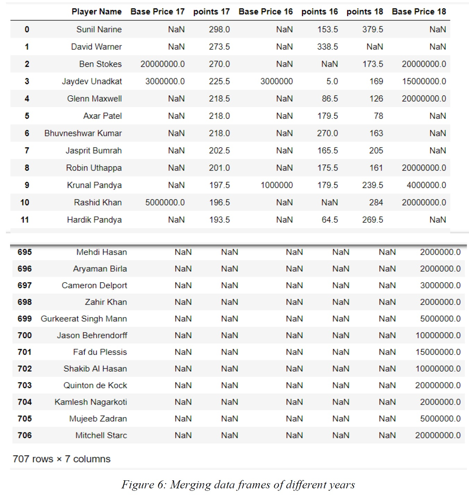
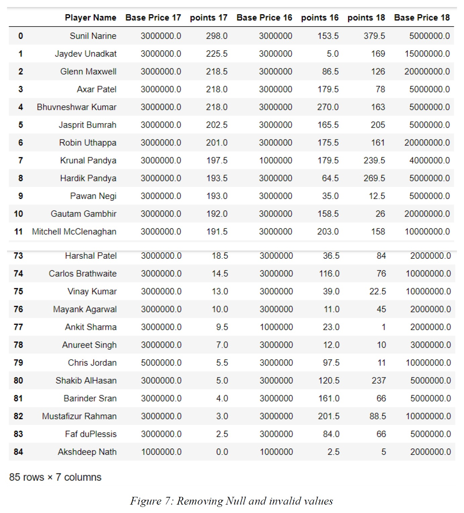
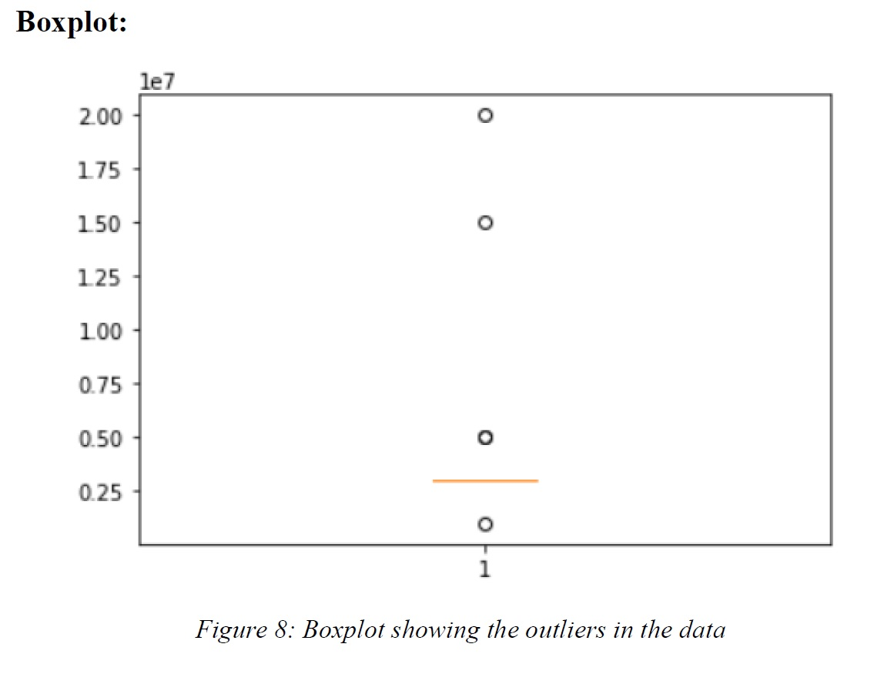
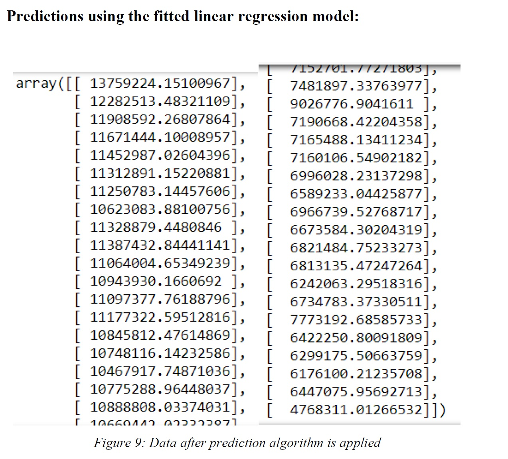

Predicting prices of ipl players
Web scraping

Converting the extracted data into a data frame:

Merging the datasets of different years:

Removing the NaN values:

Removing outliers from the data:

Splitting the data and fitting the linear regression model:
